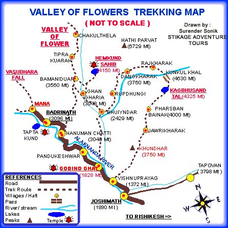

Valley of Flowers is a national park in Uttarakhand known for its meadows of endemic alpine flowers and the variety of flora. It is also the home of many endangered species like Asiatic black bear, brown bear and blue sheep. It is a high-altitude valley with the rich variety of flora and innumerable species of flowers. Best time to visit – Throughout the year. Best Month August
Map:
